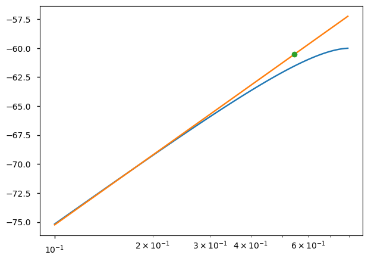

# Importing sympy and setting the printing in the notebook|
from sympy import symbols, init_printing
from sympy import exp, sin, cos, log, Abs, solve
import sympy as sym
from sympy.abc import c
init_printing()
import matplotlib.pyplot as plt
%matplotlib inline
plt.style.use('seaborn-v0_8-notebook')
plt.rcParams['figure.figsize'] = 7, 5In this entry I explore Sympy as symbolic manipulation tool for studying the non-linear behavior of RF circuits. Sympy is a relatively new library with a nice interface but still quite some problems that some times is necessary to circumvent. Nevertheless the clean interface and the fact that sympy is just a Python module make it a interesting module to try. More specifically I was interested to know if I could use Sympy to symbolically study the non-linear effects over the spectrum of sinousoidal inputs.
First I will take a non-linear system and calculate the output to a sinusoidal, then I will create some functions that will required to collect and classify the different harmonics at the output. Then I will calculate metrics like the 1dB compression point or the IIP3. Finally I would compare the symbolic results against the numerical solution for the 1dB compression point.
Harmonic distortion
A non-linear system converts sinousoid signals of a single frequency, at its input, in signals with multiple frequencies. The frequencies of the signals at the output are integer multiples of the input frequency. To illustrate that suppose a memoryless system, its transfer function can be approximated by the following function, [1]: \[ y(t) \approx \alpha_1 x(t) + \alpha_2 x(t)^2 + \alpha_3 x(t)^3 \] Lets determine the response of this system to a input signal \(sin(\omega t)\).
x, t, a1, a2, a3, w, A= symbols('x, t, \\alpha_1, \\alpha_2, \\alpha_3, \\omega, A', Real=True)
y = a1 * x + a2 * x ** 2 + a3 * x ** 3
y\(\displaystyle \alpha_{1} x + \alpha_{2} x^{2} + \alpha_{3} x^{3}\)
the response of this system to a sinousoidal is given by:
y_onetone = y.subs(x, A*cos(w*t))
y_onetone\(\displaystyle A^{3} \alpha_{3} \cos^{3}{\left(\omega t \right)} + A^{2} \alpha_{2} \cos^{2}{\left(\omega t \right)} + A \alpha_{1} \cos{\left(\omega t \right)}\)
The result given by Sympy is trivial. In order to decompose and identify the different frequency terms it necessary to reduce the power terms in the sinousoid functions. This task that is normally done by expanding the trigonometric functions, as the function TrigReduce function in Mathematica, require a bit more of work in Sympy [Annex 1]. In SymPy that can be achieved by rewriting the function using a exponential, then expanding the resulting expression and finally collecting the cos terms. A bit complicated procedure, compared with Maxima and Sage.
# function to reduce the order of a expression contain terms like cos(w*t)**n
from sympy import exp, sin, cos
def expand_trig(expr):
# exapand the complete series
expr_int = expr.rewrite(cos, exp).rewrite(sin, exp).expand()
# Go from exp to sin and simplify
expr_int = expr_int.rewrite(exp, cos).expand()
return expr_int
y_expand = expand_trig(y_onetone)
y_expand\(\displaystyle \frac{3 A^{3} \alpha_{3} \cos{\left(\omega t \right)}}{4} + \frac{A^{3} \alpha_{3} \cos{\left(3 \omega t \right)}}{4} + \frac{A^{2} \alpha_{2} \cos{\left(2 \omega t \right)}}{2} + \frac{A^{2} \alpha_{2}}{2} + A \alpha_{1} \cos{\left(\omega t \right)}\)
The different terms can be collected easily with the collect function:
harmonics = y_expand.collect([cos(w*t), cos(2*w*t), cos(3*w*t)], evaluate=False)
harmonics\(\displaystyle \left\{ 1 : \frac{A^{2} \alpha_{2}}{2}, \ \cos{\left(\omega t \right)} : \frac{3 A^{3} \alpha_{3}}{4} + A \alpha_{1}, \ \cos{\left(2 \omega t \right)} : \frac{A^{2} \alpha_{2}}{2}, \ \cos{\left(3 \omega t \right)} : \frac{A^{3} \alpha_{3}}{4}\right\}\)
The main observation here is that the gain of the circuit depends on \(\alpha_1\) and also on \(\alpha_3\). If \(\alpha_1\alpha_3>0\) it is said that the circuit observes a expansive behavior, meaning that the gain will increase as the input amplitude increases. On the other hand if \(\alpha_1\alpha_3<0\) the circuit exhibits a compressive behavior. Although expansive behavior can be observed in electronic systems, in certain limited inputs ranges, if the amplitude of the input signal is observed in a range wide enough most electronic systems are compressive.
1dB compression point
A measurement of the compression of electronics systems is the 1dB compression point. That is the point where the gain of the circuits is 1dB lower than \(\alpha_1\) that is the ideal gain.
We can calculate the 1dB compression point as:
Gain = (harmonics[cos(w*t)]/A).simplify()
Gain\(\displaystyle \frac{3 A^{2} \alpha_{3}}{4} + \alpha_{1}\)
A1dB = solve(Gain - a1/(10**(1/20)), A)
A1dB\(\displaystyle \left[ - 0.38078701284971 \sqrt{- \frac{\alpha_{1}}{\alpha_{3}}}, \ 0.38078701284971 \sqrt{- \frac{\alpha_{1}}{\alpha_{3}}}\right]\)
The two roots have meaning as the amplitude of a sinousoidal could be also a negative signal and in both cases the system will reach the 1dB compression point. This result is well known and can be easily found in the literature, the reader cold think that it is pointless to use sympy to find it, however it is important to note that a similar method can be used to find the expression for the 1dB compression point of an arbitrary system.
Intermodulation
In a similar way it is possible to find the inter-modulation products of the same system. In this case the signal has to be replaced by the two tones modulation signal.
# Symbols for a two tones modulation
w1, w2, A1, A2 = symbols('\\omega_1, \\omega_2, A_1, A_2', Real=True)
y_twotones = y.subs(x, A1*cos(w1*t)+A2*cos(w2*t))
y_twotones\(\displaystyle \alpha_{1} \left(A_{1} \cos{\left(\omega_{1} t \right)} + A_{2} \cos{\left(\omega_{2} t \right)}\right) + \alpha_{2} \left(A_{1} \cos{\left(\omega_{1} t \right)} + A_{2} \cos{\left(\omega_{2} t \right)}\right)^{2} + \alpha_{3} \left(A_{1} \cos{\left(\omega_{1} t \right)} + A_{2} \cos{\left(\omega_{2} t \right)}\right)^{3}\)
Similarly the two tones function has to be expand with the expand_trig function that was used before, but after expanding the function we need to represent the signal as sum of angles. This is done in SymPy by the obscure function TR8.
# The function TR8 from simplify fu returns the "sum of angles" representation
# of the terms like sin(x)*sin(y)
from sympy.simplify.fu import TR8
y_expand = expand_trig(y_twotones)
# As sum of angles
y_expand = TR8(y_expand).expand()
y_expand\(\displaystyle \frac{3 A_{1}^{3} \alpha_{3} \cos{\left(\omega_{1} t \right)}}{4} + \frac{A_{1}^{3} \alpha_{3} \cos{\left(3 \omega_{1} t \right)}}{4} + \frac{3 A_{1}^{2} A_{2} \alpha_{3} \cos{\left(\omega_{2} t \right)}}{2} + \frac{3 A_{1}^{2} A_{2} \alpha_{3} \cos{\left(2 \omega_{1} t - \omega_{2} t \right)}}{4} + \frac{3 A_{1}^{2} A_{2} \alpha_{3} \cos{\left(2 \omega_{1} t + \omega_{2} t \right)}}{4} + \frac{A_{1}^{2} \alpha_{2} \cos{\left(2 \omega_{1} t \right)}}{2} + \frac{A_{1}^{2} \alpha_{2}}{2} + \frac{3 A_{1} A_{2}^{2} \alpha_{3} \cos{\left(\omega_{1} t \right)}}{2} + \frac{3 A_{1} A_{2}^{2} \alpha_{3} \cos{\left(\omega_{1} t - 2 \omega_{2} t \right)}}{4} + \frac{3 A_{1} A_{2}^{2} \alpha_{3} \cos{\left(\omega_{1} t + 2 \omega_{2} t \right)}}{4} + A_{1} A_{2} \alpha_{2} \cos{\left(\omega_{1} t - \omega_{2} t \right)} + A_{1} A_{2} \alpha_{2} \cos{\left(\omega_{1} t + \omega_{2} t \right)} + A_{1} \alpha_{1} \cos{\left(\omega_{1} t \right)} + \frac{3 A_{2}^{3} \alpha_{3} \cos{\left(\omega_{2} t \right)}}{4} + \frac{A_{2}^{3} \alpha_{3} \cos{\left(3 \omega_{2} t \right)}}{4} + \frac{A_{2}^{2} \alpha_{2} \cos{\left(2 \omega_{2} t \right)}}{2} + \frac{A_{2}^{2} \alpha_{2}}{2} + A_{2} \alpha_{1} \cos{\left(\omega_{2} t \right)}\)
Those are all the terms that result of the expansion of this function, we can find easily the amplified terms, at frequencies \(\omega_1, \omega_2\) and the intermodulation terms at frequencies \(2\omega_1 -\omega_2, 2\omega_1 -\omega_2\). (Please notice that in the equations below you can se the full equation by trying to move the text in the equation box)
sel = [cos(w1*t), cos(w2*t), cos(2*w1*t-w2*t), cos(2*w2*t-w1*t)]
y_terms = y_expand.collect(sel, evaluate=False)
y_terms\(\displaystyle \left\{ 1 : \frac{A_{1}^{3} \alpha_{3} \cos{\left(3 \omega_{1} t \right)}}{4} + \frac{3 A_{1}^{2} A_{2} \alpha_{3} \cos{\left(2 \omega_{1} t + \omega_{2} t \right)}}{4} + \frac{A_{1}^{2} \alpha_{2} \cos{\left(2 \omega_{1} t \right)}}{2} + \frac{A_{1}^{2} \alpha_{2}}{2} + \frac{3 A_{1} A_{2}^{2} \alpha_{3} \cos{\left(\omega_{1} t + 2 \omega_{2} t \right)}}{4} + A_{1} A_{2} \alpha_{2} \cos{\left(\omega_{1} t - \omega_{2} t \right)} + A_{1} A_{2} \alpha_{2} \cos{\left(\omega_{1} t + \omega_{2} t \right)} + \frac{A_{2}^{3} \alpha_{3} \cos{\left(3 \omega_{2} t \right)}}{4} + \frac{A_{2}^{2} \alpha_{2} \cos{\left(2 \omega_{2} t \right)}}{2} + \frac{A_{2}^{2} \alpha_{2}}{2}, \ \cos{\left(\omega_{1} t \right)} : \frac{3 A_{1}^{3} \alpha_{3}}{4} + \frac{3 A_{1} A_{2}^{2} \alpha_{3}}{2} + A_{1} \alpha_{1}, \ \cos{\left(\omega_{2} t \right)} : \frac{3 A_{1}^{2} A_{2} \alpha_{3}}{2} + \frac{3 A_{2}^{3} \alpha_{3}}{4} + A_{2} \alpha_{1}, \ \cos{\left(\omega_{1} t - 2 \omega_{2} t \right)} : \frac{3 A_{1} A_{2}^{2} \alpha_{3}}{4}, \ \cos{\left(2 \omega_{1} t - \omega_{2} t \right)} : \frac{3 A_{1}^{2} A_{2} \alpha_{3}}{4}\right\}\)
Printing the only terms we are interested in:
y_filtered_terms = {key: y_terms[key] for key in sel}
y_filtered_terms\(\displaystyle \left\{ \cos{\left(\omega_{1} t \right)} : \frac{3 A_{1}^{3} \alpha_{3}}{4} + \frac{3 A_{1} A_{2}^{2} \alpha_{3}}{2} + A_{1} \alpha_{1}, \ \cos{\left(\omega_{2} t \right)} : \frac{3 A_{1}^{2} A_{2} \alpha_{3}}{2} + \frac{3 A_{2}^{3} \alpha_{3}}{4} + A_{2} \alpha_{1}, \ \cos{\left(\omega_{1} t - 2 \omega_{2} t \right)} : \frac{3 A_{1} A_{2}^{2} \alpha_{3}}{4}, \ \cos{\left(2 \omega_{1} t - \omega_{2} t \right)} : \frac{3 A_{1}^{2} A_{2} \alpha_{3}}{4}\right\}\)
Lets calculate the input third intercept point (IIP3), this is were the power of the ideal amplifier with gain \(\alpha_1\) would intercept the power of the interdulation products of order three (IM3)|
# Lets substitude the terms A1, A2 for A and find the power of the signal
IM3 = ((y_filtered_terms[cos(2*w1*t-w2*t)]).subs({A2:A, A1:A}))**2
LT = (a1*A)**2
sol = solve(LT-IM3, A)
IIP3 = sol[2]
sol\(\displaystyle \left[ 0, \ - \frac{2 \sqrt{3} \sqrt[4]{\frac{\alpha_{1}^{2}}{\alpha_{3}^{2}}}}{3}, \ \frac{2 \sqrt{3} \sqrt[4]{\frac{\alpha_{1}^{2}}{\alpha_{3}^{2}}}}{3}, \ - \frac{2 \sqrt{3} i \sqrt[4]{\frac{\alpha_{1}^{2}}{\alpha_{3}^{2}}}}{3}, \ \frac{2 \sqrt{3} i \sqrt[4]{\frac{\alpha_{1}^{2}}{\alpha_{3}^{2}}}}{3}\right]\)
The term we are interested is the second one as is the only one positive. If we replace \(\alpha_1\) and \(\alpha_3\) by their absolute values, we obtain result in the most common form:
IIP3.subs({a1:Abs(a1), a3:Abs(a3)})\(\displaystyle \frac{2 \sqrt{3} \sqrt{\left|{\alpha_{1}}\right|}}{3 \sqrt{\left|{\alpha_{3}}\right|}}\)
Generalizing the 1dB and IIP3 functions
Now lets generalize this functions to find the 1dB compression point and the IIP3 for any function that can be represented by its Taylor expansion.
def symbolic_1dB(f_x, x, x0=0, n=6):
'''
Returns a symbolic expression for the 1dB compression point of the input function: f_x(x). The function is
approximated by its taylor function around x0, with the function derivided n-times.
'''
A, w, t = symbols('A, \\omega, t', Positive=True)
# Calculate the taylor expression
f_x_taylor = sym.series(f_x, x=x, x0=x0, n=n).removeO()
# Calculate the un-compressed gain around x0
alpha1 = f_x_taylor.collect([x-x0], evaluate=False)[x-x0]
# Apply the one tone test
f_x_one_tone = f_x_taylor.subs(x, A*cos(w*t))
# Convert to trigonometric expresions as a*cos(w*t -2*w*t)
f_x_one_tone_expanded = expand_trig(f_x_one_tone)
# The compressed gain is found collecting the terms
Gain =(f_x_one_tone_expanded.collect([cos(w*t)], evaluate=False)[cos(w*t)]/A).simplify()
# Find where the compresion gain matches the un-compressed gain -1dB
A1dB = solve(Gain - alpha1/(10**(1/20)), A)
for term in A1dB:
term.simplify()
return A1dB
def symbolic_IIP3(f_x, x, x0=0, n=6):
'''
Return a symbolic expression for the IM3 of a function tha represent the behavior
the method uses a tailor expansion around x0 to obtain the IM terms'''
A, w1, w2, t = symbols('A, \\omega1, \\omega2, t', Real=True)
# Calculate the taylor expression
f_x_taylor = sym.series(f_x, x=x, x0=x0, n=n).removeO()
# Calculate un-compressed gain around x0
alpha1 = f_x_taylor.collect([x-x0], evaluate=False)[x-x0]
# Applie the two tones test
f_x_two_tone = f_x_taylor.subs(x, A*cos(w1*t)+A*cos(w2*t))
# Expand trigonometric functions
f_x_two_tone_expanded = expand_trig(f_x_two_tone)
# As sum of angles
f_x_two_tone_expanded = TR8(f_x_two_tone_expanded).expand()
# Terms that are required
sel = [cos(w1*t), cos(w2*t), cos(2*w1*t-w2*t), cos(2*w2*t-w1*t)]
f_x_two_tone_expanded = f_x_two_tone_expanded.collect(sel, evaluate=False)
IM3 = (f_x_two_tone_expanded[cos(2*w1*t-w2*t)]) ** 2
LT = (alpha1 * A) ** 2
# solve the equation
IIP3 = solve(LT-IM3, A)
return IIP3In order to verify they work we can simply create a third order function as shown below and calculate the 1dB compression point and the IIP3. These is shown below:
# Third order polynomy
y_x = a1 * x + a2 * x ** 2 + a3 * x ** 3
A1dB_n = symbolic_1dB(y_x, x, n=6)
A1dB_n\(\displaystyle \left[ - 0.38078701284971 \sqrt{- \frac{\alpha_{1}}{\alpha_{3}}}, \ 0.38078701284971 \sqrt{- \frac{\alpha_{1}}{\alpha_{3}}}\right]\)
IIP3_n = symbolic_IIP3(y_x, x, n=6)
IIP3_n\(\displaystyle \left[ 0, \ - \frac{2 \sqrt{3} \sqrt[4]{\frac{\alpha_{1}^{2}}{\alpha_{3}^{2}}}}{3}, \ \frac{2 \sqrt{3} \sqrt[4]{\frac{\alpha_{1}^{2}}{\alpha_{3}^{2}}}}{3}, \ - \frac{2 \sqrt{3} i \sqrt[4]{\frac{\alpha_{1}^{2}}{\alpha_{3}^{2}}}}{3}, \ \frac{2 \sqrt{3} i \sqrt[4]{\frac{\alpha_{1}^{2}}{\alpha_{3}^{2}}}}{3}\right]\)
The second root and the third, that are the both positive and real, are the ones we are looking for and the result agree with the well known expression.
1dB3 and IIP3 of a differential pair using MOSFET transistors
Suppose a differential cmos pair with quadratic law transistors. It can be shown that the characteristic function of this system behaves as:
from sympy import sqrt, Rational
un, Cox, W, L, vd, ISS = symbols('\\mu_n, C_{ox}, W, L , v_d, I_{SS}', positive=True)
Id = Rational(1 / 2) * un * Cox * W / L * vd *sqrt(4 * ISS / un /Cox /(W/L) - vd**2)
Id\(\displaystyle \frac{C_{ox} W \mu_{n} v_{d} \sqrt{- v_{d}^{2} + \frac{4 I_{SS} L}{C_{ox} W \mu_{n}}}}{2 L}\)
We can calculate the 1dB compresion point and the IIP3 easily with the functions we find above, that gives:
A1dB_n = symbolic_1dB(Id, vd, n=6)
A1dB_n\(\displaystyle \left[ - \frac{1.04751152546383 \sqrt{I_{SS}} \sqrt{L}}{\sqrt{C_{ox}} \sqrt{W} \sqrt{\mu_{n}}}, \ \frac{1.04751152546383 \sqrt{I_{SS}} \sqrt{L}}{\sqrt{C_{ox}} \sqrt{W} \sqrt{\mu_{n}}}, \ - \frac{4.50525031446418 i \sqrt{I_{SS}} \sqrt{L}}{\sqrt{C_{ox}} \sqrt{W} \sqrt{\mu_{n}}}, \ \frac{4.50525031446418 i \sqrt{I_{SS}} \sqrt{L}}{\sqrt{C_{ox}} \sqrt{W} \sqrt{\mu_{n}}}\right]\)
IIP3_n = symbolic_IIP3(Id, vd, n=6)
IIP3_n\(\displaystyle \left[ 0, \ - \frac{4 \sqrt{2} \sqrt{I_{SS}} \sqrt{L} \sqrt{- \frac{3}{50} + \frac{\sqrt{109}}{50}}}{\sqrt{C_{ox}} \sqrt{W} \sqrt{\mu_{n}}}, \ \frac{4 \sqrt{2} \sqrt{I_{SS}} \sqrt{L} \sqrt{- \frac{3}{50} + \frac{\sqrt{109}}{50}}}{\sqrt{C_{ox}} \sqrt{W} \sqrt{\mu_{n}}}, \ - \frac{4 \sqrt{2} \sqrt{I_{SS}} \sqrt{L} \sqrt{- \frac{3}{50} - \frac{\sqrt{91} i}{50}}}{\sqrt{C_{ox}} \sqrt{W} \sqrt{\mu_{n}}}, \ \frac{4 \sqrt{2} \sqrt{I_{SS}} \sqrt{L} \sqrt{- \frac{3}{50} - \frac{\sqrt{91} i}{50}}}{\sqrt{C_{ox}} \sqrt{W} \sqrt{\mu_{n}}}, \ - \frac{4 \sqrt{2} \sqrt{I_{SS}} \sqrt{L} \sqrt{- \frac{3}{50} + \frac{\sqrt{91} i}{50}}}{\sqrt{C_{ox}} \sqrt{W} \sqrt{\mu_{n}}}, \ \frac{4 \sqrt{2} \sqrt{I_{SS}} \sqrt{L} \sqrt{- \frac{3}{50} + \frac{\sqrt{91} i}{50}}}{\sqrt{C_{ox}} \sqrt{W} \sqrt{\mu_{n}}}, \ - \frac{4 \sqrt{2} \sqrt{I_{SS}} \sqrt{L} \sqrt{- \frac{\sqrt{109}}{50} - \frac{3}{50}}}{\sqrt{C_{ox}} \sqrt{W} \sqrt{\mu_{n}}}, \ \frac{4 \sqrt{2} \sqrt{I_{SS}} \sqrt{L} \sqrt{- \frac{\sqrt{109}}{50} - \frac{3}{50}}}{\sqrt{C_{ox}} \sqrt{W} \sqrt{\mu_{n}}}\right]\)
Selecting the roots of that make sense in both cases we have:
A1dB = A1dB_n[1]
A1dB\(\displaystyle \frac{1.04751152546383 \sqrt{I_{SS}} \sqrt{L}}{\sqrt{C_{ox}} \sqrt{W} \sqrt{\mu_{n}}}\)
IIP3 = IIP3_n[2]
IIP3\(\displaystyle \frac{4 \sqrt{2} \sqrt{I_{SS}} \sqrt{L} \sqrt{- \frac{3}{50} + \frac{\sqrt{109}}{50}}}{\sqrt{C_{ox}} \sqrt{W} \sqrt{\mu_{n}}}\)
We can verify this results now using numerically using numpy.
Numeric verifcation
import sympy as sym
import numpy as np # Conver expresion from sympy to numpy
Id_num = sym.lambdify((un, Cox, W, L, vd, ISS), Id, modules='numpy')
A1dB_num = sym.lambdify((un, Cox, W, L, ISS), A1dB, modules='numpy')
un_val = 17.72e-3 # m**2/V*s
Cox_val = 17.26e-3 # F/m**2
W_val = 10e-6 # m
L_val = 1e-6# m
vd_val = np.logspace(-1, -0.1, 100)
ISS_val = 1e-3
Id = Id_num(un_val, Cox_val, W_val, L_val, vd_val, ISS_val)
A1dB = A1dB_num(un_val, Cox_val, W_val, L_val, ISS_val)## calculate the 1dB compresion point numerically
def find_A1dB(x, y):
a1 = np.diff(y)/np.diff(x)
a1 = a1[0]
y_linear_dB = 20*np.log10(a1*x)
ix, = np.where(y_linear_dB - 20*np.log10(y) > 1)
return y_linear_dB, ix[0]y_linear_dB, ix = find_A1dB(vd_val, Id)fig, ax = plt.subplots(1,1)
ax.semilogx(vd_val, 20*np.log10(Id), label = "non-linear")
ax.semilogx(vd_val, y_linear_dB, label = 'linear')
ax.semilogx(vd_val[ix], y_linear_dB[ix], 'o', label = '1dB')
A1dB_num = vd_val[ix]
print("1dB numeric {:2.3f}(V)".format(A1dB_num))
print("1dB sympy {:2.3f}(V)".format(A1dB))
plt.show()1dB numeric 0.545(V)
1dB sympy 0.599(V)

Conclusion
This entry shows how to use Sympy to calculate the 1dB and IIP3 for some arbitrary function using Sympy. Although a bit cumbersome SymPy can certainly use to manipulate the relatively simple presented here.
References
[1]B. Razavi, RF Microelectronics, 2 edition. Upper Saddle River, NJ: Prentice Hall, 2011.
Download
Annex 1. Over trigonometric expansion in sympy
Sympy does not have a function to reduce the order of sinousoidals of the form \(sin(x)^n\), the only functions that do something similar is sympy.simplify.fu.TR7 but they only work for orders smaller than 3. However this can be solved easily using the expression below that works with a similar expresion independently of the order.
from sympy import *
x = Symbol('x')
def trig_expand(expr):
return expr.rewrite(sin, exp).rewrite(cos, exp).expand().rewrite(exp, sin).simplify()trig_expand(sin(x)**5)\(\displaystyle \frac{5 \sin{\left(x \right)}}{8} - \frac{5 \sin{\left(3 x \right)}}{16} + \frac{\sin{\left(5 x \right)}}{16}\)
trig_expand(cos(x)**7)\(\displaystyle \frac{35 \cos{\left(x \right)}}{64} + \frac{21 \cos{\left(3 x \right)}}{64} + \frac{7 \cos{\left(5 x \right)}}{64} + \frac{\cos{\left(7 x \right)}}{64}\)